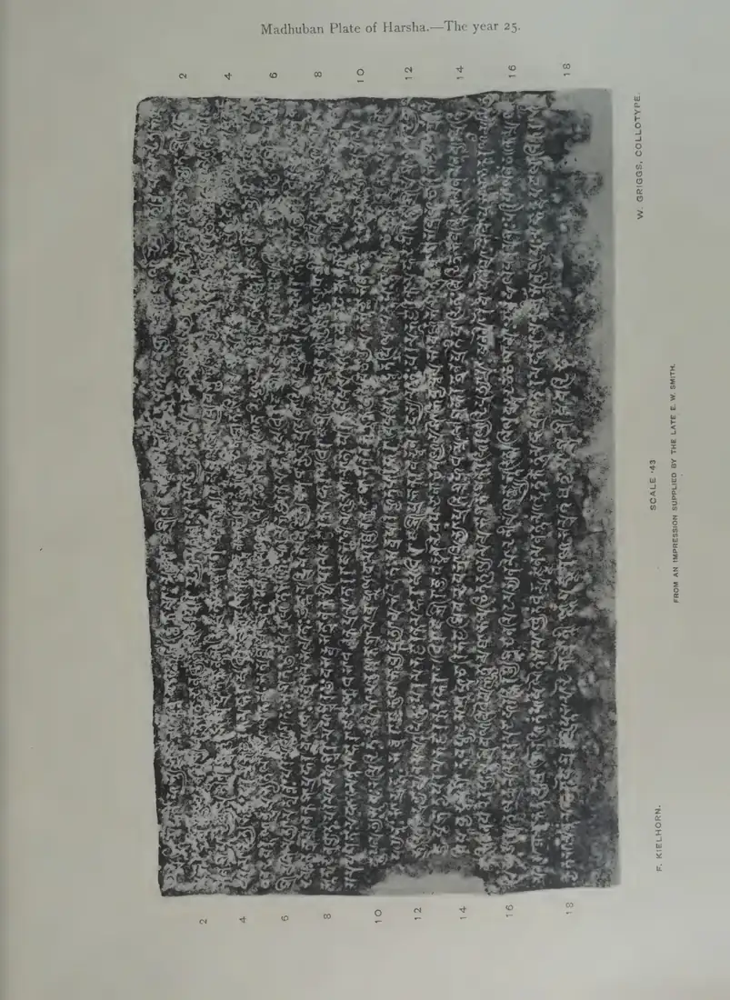

Madhuban plate of Harsha ; the year 25
MADHUBAN PLATE OF HARSHA;
THE YEAR 25.
THE YEAR 25.
BY F. KIELHORN, PH.D., D. LITT., LL.D., C.I.E.; GÖTTINGEN.
This plate was discovered, in January 1888, in a field near the village of Madhuban2 in the pargaṇa Nathûpûr of the tahsîl Sagrî, in the Azamgarh district of the Benares division of the United Provinces, and is now in the Provincial Museum of Lucknow. The inscription which it contains has been already edited, by the late Professor Bühler,3 in Ep. Ind. Vol. I. p. 67 ff. As it is desirable to issue a facsimile of the plate, I re-edit the inscription from impressions that were furnished to Dr. Hultzsch by the late Mr. E. W. Smith.
This is a single copper-plate, about 1' 8" broad by 1' high, and inscribed on one side only. Judging from the impressions, a seal was soldered on to the middle of the proper right side of the plate, just as is the case with the Banskhêra plate of Harsha and the three plates of the Mahârâjas of Mahôdaya,4 but it must have got detached from the plate5 and has not been discovered. In the upper part and on the proper left side the plate has suffered somewhat from corrosion, but the writing throughout is so deeply engraved that on the back of the impressions every letter of the 18 lines which the plate contains may be read with absolute certainty. The size of the letters is about . The characters belong to the north-western class of alphabets;6 in general, they closely resemble those given (from the Lakkhâ Maṇdal inscription, North. Inscr. No. 600) in columns xv. and xvi. of Table IV. of Professor Bühler's Ind. Paleographie. Of initial vowels the text only contains a (e.g. in anayôr=, l. 15); i (e.g. in iva, l. 6), the form of which, employed here, in Professor Bühler's Table occurs only in much later inscriptions; u (in
1 The words used of Kumudvatî are selected with reference to the original meaning of that name. Kumudvatî is likened to a group of lotuses (kumudvatî) growing in a pond (sarasah prarâdhâ), which open their blossoms (vikasvar-dâgî) when touched by the beams (kara-sparśam avâpya) of the moon. The marriage of Kuša and Kumudvatî, the sister of the serpent Kumuda, is told in the sixteenth sarga of the Ragiuvahśa.
2 According to Dr. Führer, Monumental Antiquities and Inscriptions in the N.-W. Provinces and Oudh, p. 189, where the above information is given, the village of Madhuban is 32 miles north-east of Azamgarh; but I have not found the name in the Indian Atlas, sheet No. 103.
3 Some of the errors which Prof. Bühler's text contains were corrected by him, when editing the Banskhêra plate of Harsha, above, Vol. IV. p. 208 ff.
4 See above, Vol. IV. p. 208, and Vol. V. p. 208.
5 Compare the Sônpat seal of Harshavardhana, Gupta Inscr. p. 281, and Plate.
6 The apparently more antique manner in which essentially the same alphabet was written in Eastern India may be seen from the plates of the time of Śaśânkarâja (above, Vol. VI. p. 144, Plate) which are only about ten years older than this Madhuban plate.
utkháya, l. 7); and é (in êkachakkra°, l. 3). Of the consonants, gh, qh and b do not occur; and chh, jh, ñ and þ are only found as subscript letters, e.g. in tach=chhásanañ, l. 10, ujjjitavún, l. 7, ájñá, l. 15, and jyéshtha, l. 13. Regarding the other signs it may be noted that five of them—k, g, q, r and s—when they have no subscript letters, have a small hook at the bottom (see e.g. bhóyakara, l. 15, taqít, l. 16, and samádésách, l. 18); and attention may also be drawn to the forms of k (e.g. in kara, l. 15), ñ (e.g. in sódrañgah, l. 11), ch (e.g. in chañchaláyáh, l. 16), t (e.g. in paṭalá°, l. 17), d (e.g. in dánañ, l. 16), ph (in phalañ, l. 16), and v (e.g. in Šivadéva°, l. 14). The superscript sign for r is sometimes written above, and sometimes on, the line; y, where it follows upon another consonant, is always denoted by the secondary, subscript form, even in the conjunct ry (e.g. in paryantah, l. 11). The ordinary form of the subscript th may be seen from the sthá of rájastháníya, l. 9; the same form is used in the conjunct rth, in samprínitárthi, l. 5, but the full form of tha is exceptionally employed in the sthá of sévó-pasthánañ, l. 15. The subscript form of n does not differ from the sign for na; see e.g. Sávarṇni, l. 13, and Vishṇuvríddha, l. 14. Apparently in order to distinguish clearly between the subscript dh and v, the latter is denoted by a peculiar triangular sign; compare e.g. the ddh of -bhivríddhayé, l. 13, with the tv of =ágraháratvéna, l. 14. The only final consonant which occurs is the t of the word samvat in line 18; it is denoted by the lower part of the sign for ta, with a separate horizontal line above it.—As regards medial vowels, only the signs for á, u and ú call for remarks. The ordinary sign for á (and for the á of já) may be seen e.g. in mahárájádhi-rúja, l. 12. When á follows upon ñ, t or n, or a conjunct beginning with one of these consonants, it is denoted by a wavy line placed vertically above the sign for ñ, t or n; see e.g. bhañktvá, l. 10, bhattáraka, l. 13, and °karánádhi, at the end of line 17. In the same way á is denoted in the khyá of samákhyátañ, l. 17 (compare with it the khá of vimukháh, l. 7), and in the jñá at the commencement of line 10 (compare with it the jñá of ájñá, l. 15).1 Excepting in the syllable ru (for which see Varuṇ, l. 5), the vowel u is either denoted by a subscript vertical line—or prolongation of the vertical line of the consonant-sign—ending with a small hook, or by a sign which resembles the subscript u of the modern Nágarí alphabet. The former way of denoting u is followed in writing the aksharas chchhu, shṇu, du, nu, pu, mu, yu, vu, dvu and su, the latter in ku, tku, gu, tu, stu and bhu; compare vichchhurita, l. 4, dushta, l. 6, samuchita, l. 15, and tulya, l. 15, Skandaguptah, l. 17, etc. For two ways of writing the medial á—the one followed only in dú, and the other in kú, pú and bhú—compare dútakó, l. 17, and kúṭa, l. 10.—The inscription does not contain the signs of the jihvámúlíya, upadhmáníya and avagraha; but in line 18 it has three numerical symbols, for 20, 5 and 6. The symbol for 20 is like the akshara tha; that for 5 looks like tri, with the sign of the medial á attached to it; and the symbol for 6 resembles the akshara dá with a subscript u. Signs of punctuation are used in the text three times, in lines 16 and 17. Throughout the writer has formed the letters with great care and skill.—The language of the inscription is Sanskrit.2 Any unusual or rare words and technical terms which it contains will be drawn attention to in the notes on the translation. The text generally is in prose, but it contains a verse in lines 6 and 7, and two benedictive and imprecatory verses—in one of which the king Harsha himself is referred to as an authority for the sentiment expressed—in lines 16 and 17. In respect of orthography it need only be stated that the sign for v denotes both v and b, that k and t are generally doubled before r (e.g. in puttras, l. 1, and -átikkránta, l. 3, but not in -pravrítta-chakra, l. 3), and that now and then the rules of sañdhi have not been observed.
The inscription is a charter of the well-known king Harsha—or Harshavardhana, the hero of Bâpa's Harshacharita, who ruled part of Northern India at the commencement of the 7th
1 In the Banskhéra plate of Harsha the same superscript sign for á is more frequently employed.
2 According to Prof. Bühler the language of the Banskhéra plate is better than that of this plate; but I cannot find any difference.
century A.D.—by which the village of Sômakuṇḍakâ in the Kuṇḍadhânî vishaya of the Śrâvastî bhukti, which had been previously held by a Brâhmaṇ on the strength of a forged charter, was granted to two other Brâhmaṇs. The king's order was issued from the royal residence or camp of Kapitthikâ (l. 1), and is dated on the 6th of the dark half of the month Mârgaśirsha of the year 25 (apparently of the king's reign1). The actual order is preceded by the genealogy of Harsha, in the course of which it is stated that his immediate predecessor, his elder brother Râjyavardhana, after defeating Dêvagupta and other kings, was treacherously slain in his enemy's quarters. On this event and on the genealogy generally it is now unnecessary to comment.
Of the localities mentioned in the inscription, Kapitthikâ apparently is the Kie-pi-tha (Kapittha) of Hiuen-Tsiang,2 which, again, is the same as Sâmkâśya, identified by the late Sir A. Cunningham3 with the mcdern Sankisa,4 on the Kâlinadî river, about 40 miles north-west of Kanauj. And Śrâvastî, after which the Śrâvastî-bhukti was called, is the modern Sahet-Mahet5 in the Gonda district of Oudh. Kuṇḍadhânî, from which the Kuṇḍadhânî-vishaya received its name, and the village of Sômakuṇḍakâ have not been identified.
TEXT.6
- 1 Ôm7 svasti [||*] Mahâ-nau-hasty-asva-jayaskandhâvârât=Kapitthikâyâh8 mahârâja-śrî-Naravarddhanas=tasya puttras=tatpâdânudhyâtah śrî-Vajriṇidêvyâm=utpannah paramâdityabhaktô
- 2 mahârâja-śrî-Râjyavarddhanas=tasya puttras=tatpâdânudhyâtah śrî-9Apsarôdêvyâm=utpannah paramâdityabhaktô mahârâja-śrîmad-A(â)dityavarddhanas=tasya puttras=tatpâdânudhyâtah śrî-Mahâ-
- 3 sênaguptâdêvyâm=utpannas=10chatussamudr-âtikkrânta-kîrttih pratâp-ânurâg-ôpanat-ânyarâjâ11 varṇ-âśrama-vyavasthâpana-pravṛitta-chakra êkachakkraratha iva prajânâm=ârtti-harah
- 4 paramâdityabhaktah paramabhattâraka-mahârâjâdhirâja-śrî-Prabhâkaravarddhanas=tasya puttras=tatpâdânudhyâtah sitayaśah pratâna-vichchhurita-sakalabhuvanamaṇdalah parigrihîta-
- 5 Dhanada-Varuṇ-Éndra-prabhṛiti-lôkapâla-têjâh satpath-ôpârjjit-ânêka-draviṇa-bhûmi-pradâna-samprînit-ârthihridayô=tiśayita-pûrvvarâja-charitô dêvyâm=amalayaśômatyâm
- 6 śrî-Yaśômatyâm=utpannah paramasaugatah Sugata iva parahit-aikaratah paramabhattâraka-mahârâjâdhirâja-śrî-Râjyavarddhanah Râjânô12 yudhi dushṭa-vâjina iva śrî-Dêvagupt-â-
- 7 dayah kṛitvâ yêna kaśâprahâra-vimukhâh sarvvê samam saṅyatah [||*] utkhâya dvishatô vijitya vasudhâm kṛitvâ prajânâm priyam prâṇân=ujjhitavân=arâti-bhavanê saty-ânurôdhêna yah [||*] Tasy=ânuja-
1 If the Harsha era dates from the commencement of Harsha's reign, the date must fall in A.D. 630-31.
2 See Beal's Si-yu-ki, Vol. I. p. 202; compare also Jour. Roy. As. Soc. 1897, p. 421.
3 Archæol. Survey of India, Vol. I. p. 271.
4 See the Imperial Gazetteer of India, 2nd ed., Vol. XII. p. 223.
5 See ibid. p. 126. Compare also Dr. Bloch in Jour. As. Soc. of Bengal, Vol. LXVII. Part. I. pp. 289 and 290; to the inscriptions there enumerated as mentioning Śrâvastî may now be added the Lucknow Museum plate of Kîrtipâla, above, p. 96, l. 12 of the text.
6 From impressions supplied by the Curator of the Provincial Museum, Lucknow.
7 Denoted by a symbol.
8 Here and in other places below the rules of samâdhi have not been observed; read °kdyâ.
9 Readsry..
10 Originally °tpannah and °schatuh was engraved.
11 Read °rdjô.
12 Metre: Śârdûlavikriđita.
8 s=tatpâdânudhyâtah paramamâhésvarô Mahésvara iva sarvvasat[t*]v-ânukampî
paramabhattâraka-mahârâjâdhirâja-śrî-Harshah Śrâvastî-bhuktau Kuṇadhâni-
vaishayika-Sômakuṇdakâ-¹grâmê
9 samupagatâm² mahâsâmanta-mahârâja-daussâdhasâdhanika-pramâtâra-râjasthânîya-
kumârâmâty-ôparika-vishayapati-bhata-châṭa-sêvak-âdîn=prativâsi-janapadâs=cha³ samâ-
10 jñâpayaty=astu vah samviditam=⁴ayam Sômakuṇdakâ-grâmô vrâ(brâ)hmapa-
Vâmarathyêna kûṭa-sâsanêna bhuktaka iti vichârya yatas=tach=chhâsanain
bhañktvâ tasmâd=âkshipya cha svasimâ-
11 paryantah s-ôdraṅgah sarvva-râjakulâbhâvya-pratyâya-samêtah sarvva-parihrita-
parihârô vishayâd=uddhrita-piṇdah⁵ puttra-pauttr-ânugah⁶ chandrârkkakshiti-
samakâlînô
12 bhûmichchhidra-nyâyêna mayâ pîtuh paramabhattâraka-mahârâjâdhirâja-śrî-
Prabhâkaravarddhanadêvasya mâtuh paramabhattârikâ-mahâdêvî-râjñî-śrî-
Yasômatidêtyâh⁷
13 jyêshthabhrâtri-paramabhattâraka-mahârâjâdhirâja-śrî-Râjyavarddhanadêvapâdânâm cha
pupya-yasô-bhivṛidhayê Sâvarṇnisagôttra-chchhandôgasavra(bra)hmachâri-bhatṭa-
Vâtasvâmi-
14 Vishupuṛidhasagôttra-va(ba)hvṛichasavra(bra)hmachâri-bhatṭa-Śivadêvasvâ m i b h y â m
pratigraha-dharmmaṇ=⁸âgrahâratvêna pratipâditah⁹ viditvâ bhavadbhih samanu-
mantavyah prati-
15 vâsi-janapadair=apy=âjñâśravaṇa-vidhêyair=bhûtvâ yathâsamuchita-tulyamêya
bhâgabhôgakara-hirany-âdi-pratyâyâh¹⁰ anayôr=êv=ôpanêyâh sêv-ôpasthânain cha
karaṇîyam=ity=a-¹¹
16 pi cha || ¹²Asmat-kula-kkramam=udâram=udâharadbhir=anyais=cha dânam=idam=
abhyanumôdanîyam [|*] lakshmyâs=tadit-salila-vudvuda-chañchalâyâh¹³ dânain
phalam parayaśah-paripâlanain cha || Karmmaṇâ¹⁴
17 manasâ vâchâ karttavyam prâninê hitam [|*] Harshên=aita¹⁵ samâkhyâtain dharmm-
ârjjanam=anuttamam || Dûtakô=ttra mahâpramâtâra-mahâsâmanta-śrî-Skanda-
guptah [|*] mahâkshapaṭalâdhikaraṇâdhi-
18 krita-sâmanta-mahârâj-Êsvaragupta-samâdêsâch=ch=ôtkîrṇnain Garjjarêṇa¹⁶ [||*]
Samvat¹⁷ 20 5 Mârggaśirsha-vadi 6 [||*];
TRANSLATION.
(Line 1.) Ôm. Hail!From the great royal residence¹⁸ of victory, (furnished) with boats, elephants and horses—
from Kapitthikâ :¹⁹—
(There was) the Mahârâja Naravardhana.²⁰ Begotten on Vajrinîdêvi, his son, who meditated on his feet, (was) the devout worshipper of the Sun, the Mahârâja Râjyavardhana [I.].
¹ Originally Sômakuṇdikâ- was engraved, but the vowel i of the akshara ṇdi has been struck out; see the name below, in line 10.
² Read °gatân=.³ Read °padâins=cha.⁴ Read samviditam=.⁵ The akshara du of vishayâdduddhrita- is quite clear in the impressions.⁶ Read °nugas=.⁷ Read °dêvyâ.⁸ Read -dharmmêṇ=; see my note on the translation.⁹ Here one would have expected °pâdita iti.¹⁰ Read °tyâyâ.¹¹ Read =iti || 4-.¹² Metre: Vasantatilakâ.¹³ Read -budbuda-chañchalâyâ.¹⁴ Metre: Ślôka (Anushṭubh).¹⁵ Read =aitat=.¹⁶ The first akshara of this word is undoubtedly ga.¹⁷ Read samvat.¹⁸ Or 'from the great camp.'¹⁹ The sentence is continued below, in the words 'his younger brother . . Harsha issues this command.'²⁰ In the original the names of the kings and queens— including the name Dêvagupta in line 6, but excluding the name Harsha in line 17— have the word śrî or srîmat, 'the illustrious' or 'glorious,' prefixed to them.Plate 1 is bound after this page.
Begotten on Apsarôdêvi, his son, who meditated on his feet, (was) the devout worshipper of the Sun, the Mahârája Âdityavardhana. Begotten on Mahâsênaguptâdêvi, his son, who meditated on his feet, (was) the devout worshipper of the Sun, thê Paramabhatṭâraka Mahârájâdhirája Prabhâkaravardhana, whose1 fame crossed the four oceans; before whom other kings bowed down on account of his prowess and out of affection for him; who wielded his power for the due maintenance of the castes and orders of life, (and) who, like the sun,2 relieved the distress of the people. Begotten on the queen of spotless fame Yasômati, his son, who meditated on his feet, (was) the devout worshipper of Sugata (Buddha)—like Sugata solely delighting in the welfare of others—the Paramabhatṭâraka Mahârájâdhirája Rájyavardhana [II.], the tendrils of whose bright fame overspread the whole orb of the earth; who appropriated the glory of Dhanada, Varuṇa, Indra and the other guardian (deities) of the world; who gladdened the hearts of suppliants by many donations of wealth and land acquired in righteous ways, (and) who surpassed the conduct of former kings.
He in battle curbed Dêvagupta and all the other kings together, like vicious horses made8 to turn away from the lashes of the whip. Having uprooted his adversaries, having conquered the earth, having acted kindly towards the people, he through his trust in promises4 lost his life in the enemy's quarters.
(L. 7.) His younger brother, who meditates on his feet, the devout worshipper of Mahêsvara (Śiva)—like Mahêsvara taking compassion on all beings—the Paramabhatṭâraka Mahârájâdhirája Harsha issues this command to the Mahâsâmantas, Mahârájas, Dauhsâdhasâdhanikas, Pramâtâras,5 Rájasthânīyas, Kumârâmâtyas, Uparikas, Vishayapatis, regular and irregular soldiers, servants and others, assembled at the village of Sômakuṇdakâ which belongs to the Kuṇdadhânî vishaya6 in the Śrâvastî bhukti, and to the resident people:—
(L. 10.) Be it known to you! Having ascertained that this village of Sômakuṇdakâ was held7 by the Brâhmaṇ Vâmarathya on the strength of a forged charter,8 I therefore have broken that charter and taken (the village) away from him, and, for the increase of the spiritual merit and fame of my father, the Paramabhatṭâraka Mahârájâdhirája Prabhâkaravardhanadêva, of my mother, the Paramabhatṭârikâ Mahâdêvi, the queen Yasômatidêvi, and of my revered eldest brother, the Paramabhatṭâraka Mahârájâdhirája Rájyavardhanadêva, have given it, in the nature
1 Compare Gupta Inscr. p. 220, lines 1 and 2 of the text.
2 The word for 'sun,' employed in the original on account of the preceding -pravritta-chakra, is êkachakra-ratha, 'whose chariot has only one wheel'; compare for it e.g. in the third act of the Ratndvalî the verse commencing with adhvânain n=aikachakrah prabhavati, and Mayûra's Sûryaṣataka, v. 59 (where the Sun says: na hi rathô yâti mê n=aikachakrah). For the idea that the sun relieves distress, compare e.g. Gupta Inscr. p. 162, text, l. 2.
3 The Gerund kritvd of the original text is employed, in an unusual way, to convey a passive sense; 'like vicious horses (curbed) after they have been made to turn away from the lashes of the whip.' In Prâkrit we do find passive Gerunds; compare e.g. bhajjiu janti (=bhaâktvd yânti), 'they run away after having been broken,' in Prof. Pischel's Materialien zur Kenntnis des Apabhramṣa, p. 23. For Sanskrit I can only quote, from the Dakakumâracharita, kim upakritya pratyupakritavatî bhavêyam, where the Gerund upakritya must mean 'after having been favoured.'
4 According to the Harshacharita, 'allured to confidence by false civilities on the part of the king of Gauda;' see Prof. Cowell and Mr. Thomas's Translation, p. 178.
5 On pramâtâra and mahâpramâtâra, which occurs in line 17 of the text, see Ind. Ant. Vol. XXV. p. 182, note 70; pramâtri also apparently occurs in Gupta Inscr. p. 216, l. 9.
6 With Kuṇdadhântvaishayika compare Aâgadityavaishayika, above, Vol. IV. p. 211, l. 7, Vâlavivaishayika, Gupta Inscr. p. 216, l. 6, Gayâvaishayika, ibid. p. 256, l. 7 of the text, . . . vaishayika, ibid. p. 50, l. 25, etc.
7 In bhuktaka the suffix ka has been added to bhukta—as noted already by Prof. Bühler, through the influence of the Prâkrit—without altering the meaning of bhukta (svârthê); compare Prof. Pischel's Grammatik der Prâkrit-Sprachen, § 598. In Gupta Inscr. we similarly find atisṛishṭaka, kâritaka, dattaka, pravishṭaka, pratishṭâpitaka, utpannaka, utpadyamânaka.
8 On the subject of forged copper-plates see now Dr. Fleet in Ind. Ant. Vol. XXX. p. 201 ff.
of a donation1 (to Bráhmans), as an agrahára — extending to its proper boundaries, with the udraṅgu, together with all income that might be claimed by the king's family,2 exempt from all obligations,3 as a piece taken out of the district4 (to which it belongs), to follow the succession of5 sons and sons' sons, for as long as the moon, the sun and the earth endure, according to the maxim of bhámichchhidra — to the Bhaṭṭa Vátasvámin who is of the gótra of Sávarṇi and a fellow-student of the Chhandógas,6 and the Bhaṭṭa Śivadèvasvámin who is of the gótra of Vishṇuvrīddha and a fellow-student of the Bahvṛrichas.7 Knowing this, you should assent to this, and the resident people, being ready to obey my commands, should make over only to these two8 the tulya-mêya,9 the share of the produce, payments in money and other kinds of income, as they may be due, and should render service to them. Moreover:—
(L. 16.) Those who profess (to belong to) the noble line of our family and others should approve of this donation. Of fortune, unstable as lightning and a bubble of water, donations and the preservation of others' fame10 are the (real) fruit.
By deeds, thoughts and words one should do good to the living. This Harsha has declared to be the very best way of earning religious merit.
(L. 17.) The dútaka in this matter is the Mahápramátára Mahásámanta, the illustrious Skandagupta. And by order of the great officer in charge of the office of records, the Sámanta Mahárája Ísvaragupta, (this was) engraved by Garjara.
The year 20 5 Márgaśirsha-vadi 6.
1 Since pratigraha-dharmaṇ, which would be a Bahuvrīhi compound, could not be taken to qualify agrahára in the abstract noun agraháratvêna, I have altered it to pratigraha-dharmêna. With the whole passage compare e.g. above, Vol. VI. p. 139, l. 34, akshayanivl-dharmên-åkaratvêna pratipáditah. Compare also phrases like pratigrahêna pratipáditah, Ind. Ant. Vol. XV. p. 113, l. 12 of the text; agraháratvêna pratipáditah, ibid. Vol. XX. p. 124, l. 9 of the text; dèvágraháratvêna pratipádayati sma, Gupta Inscr. p. 289, l. 10; etc.
2 With rájakulábhávya compare rájábhávya in the plates of the Mahárájas of Uchchakalpa, Gupta Inscr. p. 118, l. 11; p. 122, l. 13; p. 127, l. 20; etc.
3 With sarva-parihrita-parihára compare sarvavishti-parihára-parihrita in the plates of the Vákâtaka Mahárájas, e.g. above, Vol. III. p. 262, l. 20. The meaning intended is more correctly expressed by parihrita-sarvaptda, e.g. above, Vol. IV. p. 250, l. 53, and by sarvakara-pariháram kritvá, above, Vol. III. p. 223, l. 15. Compare also sarva-bádhá-parihára (e.g. Ind. Ant. Vol. IX. p. 128, l. 35), and for similar expressions see above, Vol. VI. p. 13, note 3.
4 The expression vishayád=uddhrita-pinda I have found again only in the Pâṇdukéśvar plate of Lalitaśúra-dèva, Ind. Ant. Vol. XXV. p. 180, l. 21. I am not quite certain about the exact meaning of it.
5 I.e. 'to be inherited in turn by;' compare putra-pautr-ânugámin, e.g. above, Vol. III. p. 262, l. 21.
6 I.e. a student of the Sámavêda.
7 I.e. a student of the Rīgvêda.
8 Instead of anayór=êva one would have expected âbhyám=êva.
9 I do not know the exact technical meaning of tulya-mêya which might be translated by 'things to be weighed and to be measured;' mêya by itself we find, in gráma-pratyáyá mêya-hirany-ádayah, in Gupta Inscr. p. 257, l. 12; and tulya occurs ibid. p. 70, l. 10, apparently in a technical sense. See also above, p. 62.
10 Viz. by not resuming the grants made by them.— The verse occurs with different readings in Ind. Ant. Vol. XIX. p. 349, l. 9 of the text, and Vol. XXV. p. 181, l. 28.
